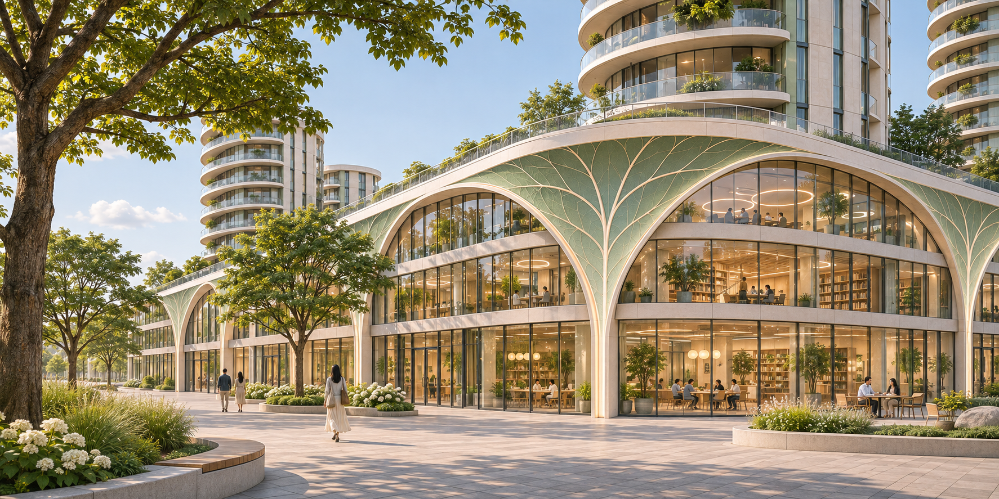
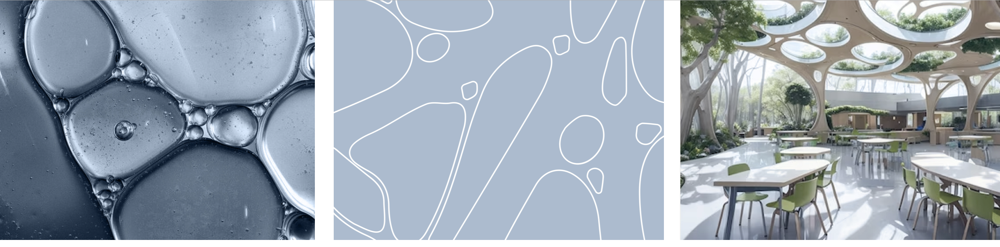
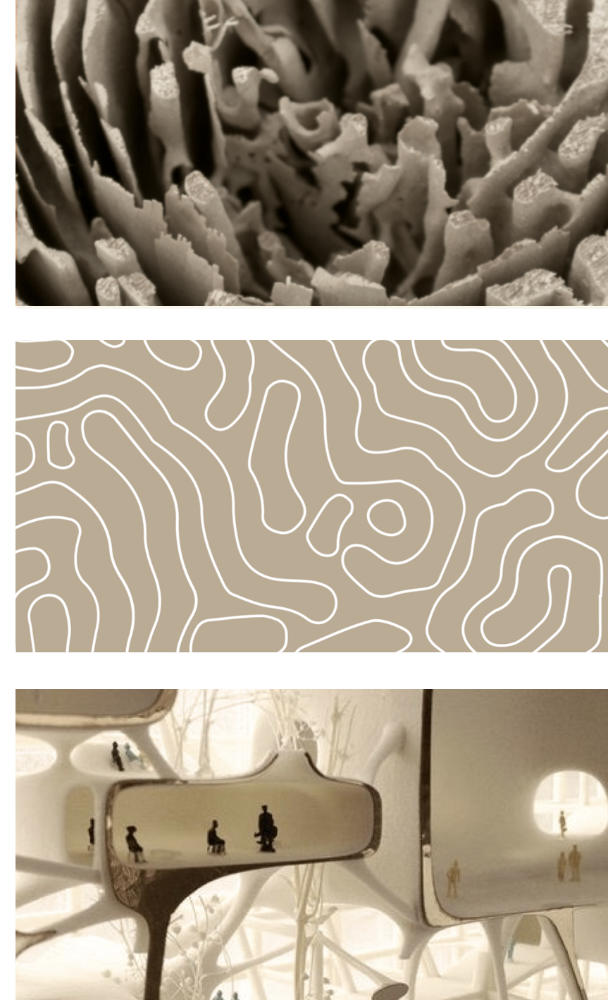
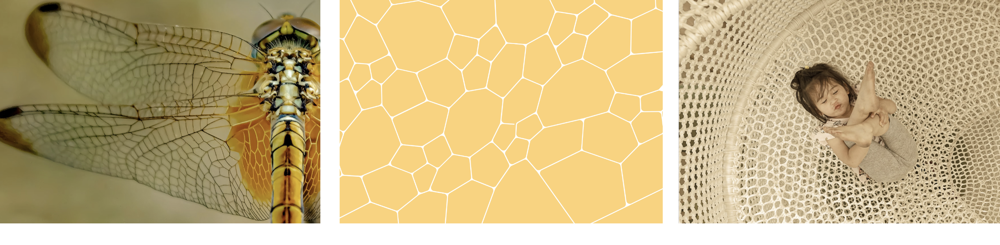
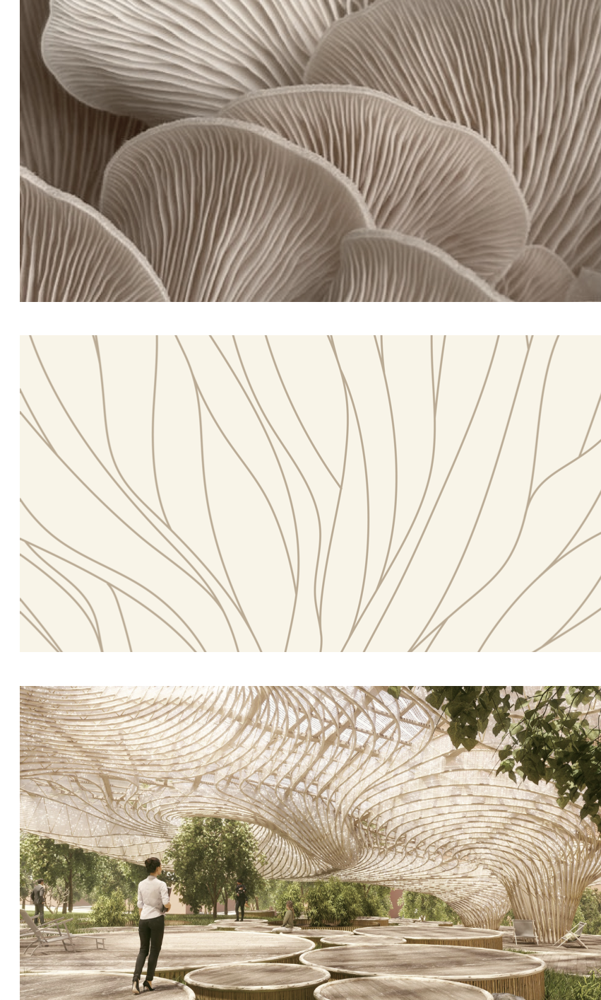

ETAJELE 5–25
Locuire și
ospitalitate
Nivelurile superioare sunt dedicate locuirii. În funcție de destinația fiecărei clădiri, acestea pot cuprinde apartamente, cămine studențești și spații de cazare hotelieră.

Un oraș nou, construit în jurul educației, al culturii și al oamenilor care pot modela viitorul României.
EXPLOREAZĂ VIZIUNEAUn loc unde învățarea face parte din viața de zi cu zi.
THE 2 MINUTE CITY pornește de la o idee simplă: locuința, educația, munca, cultura și serviciile pot fi gândite împreună, într-un oraș proiectat unitar de la început.
Viziunea duce principiile blocului 2MC la scara unui oraș nou: compact, conectat și în armonie cu natura. Apa, energia, mobilitatea și spațiile vieții cotidiene sunt gândite împreună, ca părți ale unui întreg.
Asemenea nervurilor unei frunze, spațiile și traseele orașului pot lega oamenii, ideile și locurile de care au nevoie.
O structură urbană în care locuirea, activitățile academice și profesionale, viața comunității și infrastructura sunt integrate în niveluri distincte, concepute ca părți ale aceluiași întreg.
Nivelurile superioare sunt dedicate locuirii. În funcție de destinația fiecărei clădiri, acestea pot cuprinde apartamente, cămine studențești și spații de cazare hotelieră.
Sub zona rezidențială se află spațiile destinate activității profesionale și academice: birouri, săli de studiu, laboratoare și spații de colaborare. Configurația lor poate fi adaptată profilului fiecărei clădiri.
La parter, spațiile generoase și luminoase deschid clădirea către oraș. Cafenelele, restaurantele, bibliotecile, spațiile pentru mișcare și serviciile de zi cu zi creează un cadru primitor pentru întâlnire și viață comunitară. Traseele pietonale și spațiile verzi leagă aceste locuri între ele.
Subteranul reunește funcțiuni esențiale vieții cotidiene: hipermarketuri și spații comerciale, producție compatibilă, depozitare și logistică, centre de date, colectarea și prelucrarea deșeurilor, parcări și transport public urban. Integrarea lor permite păstrarea spațiului de la nivelul solului pentru oameni și natură.
Repartizarea este conceptuală. Soluțiile tehnice, siguranța și compatibilitatea funcțiunilor vor fi stabilite prin studii de specialitate.
Aceeași structură poate primi funcțiuni diferite. Deasupra bazei dedicate comunității, muncii și învățării se află spațiile rezidențiale, iar în subteran sunt integrate funcțiuni care susțin viața orașului.
O combinație de locuire, birouri, educație și servicii pentru viața de zi cu zi.
O variantă în care spațiile academice și funcțiunile de cercetare susțin un ecosistem al cunoașterii.
Scheme conceptuale, nu planuri arhitecturale. Repartizarea pe niveluri este orientativă; amplasarea producției și a centrelor de date în subteran necesită studii de fezabilitate, siguranță, mediu și autorizare.
Educația și cultura sunt temelia unei societăți care își poate imagina și construi viitorul.
Universitățile pot arăta că învățarea continuă dincolo de sala de curs. Ea prinde viață prin cercetare, muncă, artă și participare la viața comunității.
Invităm mediul academic să participe cu curaj la crearea unui loc în care generațiile viitoare pot vedea cum cunoașterea se transformă în fapte.
Spațiile academice își găsesc locul în clădirile orașului, alături de locuințe și servicii. Inspirate din natură, ele încurajează întâlnirea dintre oameni și idei.

Proiectul poate începe cu un nucleu comun: universitățile, reprezentate prin conducerile lor, alături de UBRIS și 2MC.
Propunem explorarea unei entități dedicate care să reunească partenerii, să promoveze inițiativa și să coordoneze pregătirea ei. Un consiliu în care să fie reprezentați rectorii și inițiatorii ar putea ghida proiectul și proteja misiunea academică.
UBRIS și 2MC propun să contribuie la dezvoltarea și execuția inițiativei, în roluri ce vor fi definite împreună. Forma juridică, reprezentarea, mecanismele de decizie și atribuirea eventualelor contracte necesită analiză juridică și instituțională; niciun rol de executant nu este atribuit prin această propunere.

Orașul este imaginat ca un întreg, în care infrastructura, educația și viața comunității se susțin reciproc.
Un oraș imaginat împreună cu cei care formează generațiile viitoare.
Propunem explorarea, alături de mediul academic și de stat, a relocării coordonate a tuturor universităților din București, împreună cu campusurile și căminele lor. Ambiția este ca întregul mediu academic să poată forma nucleul acestei transformări.
Fiecare universitate și-ar păstra identitatea. Împreună, studenții, profesorii și cercetătorii ar putea crea un nucleu academic capabil să atragă centre de cercetare, companii, instituții culturale, servicii și noi locuitori. Capacitatea acestui ecosistem de a atrage noi parteneri și locuitori este o ipoteză care va trebui verificată.
Cele 12 universități publice civile apar într-un studiu al Primăriei Municipiului București. Cifra de aproximativ 147.000 de studenți este o estimare preliminară la nivel instituțional, inclusiv extensiile din afara Bucureștiului, și necesită verificare. Un milion reprezintă capacitatea avută în vedere inițial, nu o prognoză a relocării. Studiul PMB.
Învățarea deschide perspective. Orașul poate oferi locuri care trezesc curiozitatea și aduc ideile împreună.

Definirea misiunii academice, a nevoilor comunității și a condițiilor în care proiectul poate fi explorat, cu respectarea autonomiei universitare.
O societate dedicată ar putea dezvolta anumite componente ale orașului, pe baza unui model de guvernanță, a unui plan de afaceri și a unor contracte încheiate potrivit legii.
Pentru componentele eligibile, un PPP sau alte formule contractuale ar putea fi analizate în raport cu legea, studiile de fundamentare și procedurile aplicabile. Nu presupunem că întregul oraș poate fi realizat printr-un singur PPP.
Instituții financiare, investitori, dezvoltatori, companii și viitori locuitori ar putea contribui în etape, în funcție de proiecte, riscuri și condițiile de finanțare.
Referință juridică pentru explorare: OUG nr. 39/2018 privind parteneriatul public-privat.
Un scenariu inițial de până la 20 de miliarde de euro poate deschide discuția despre amploarea proiectului. Aceste sume sunt ipoteze propuse, nu evaluări independente, angajamente sau finanțare disponibilă.
Scenariul nu reprezintă un buget sau un plan de finanțare validat. Valoarea proprietăților nu este automat numerar disponibil: drepturile asupra fiecărui imobil, posibilitatea valorificării, calendarul, costurile și eventualele contribuții ale statului trebuie analizate independent. Împrumuturile trebuie rambursate, iar veniturile viitoare din vânzări și investițiile nu trebuie numărate de două ori. Nicio instituție financiară nu și-a asumat aici o contribuție. Legea învățământului superior.
Propunem explorarea unui fond dedicat studiilor, cercetării și proiectelor universitare.
O parte din profiturile distribuibile generate de componentele comerciale ale orașului ar putea susține, în timp, burse, cercetare și proiecte academice. Sursele, procentul, criteriile de finanțare și administrarea fondului ar urma să fie stabilite împreună și verificate juridic și financiar.
Astfel, dezvoltarea economică ar putea susține pe termen lung misiunea educațională aflată la originea orașului.
Discuții cu rectorii și conducerile tuturor universităților vizate. Obiectivul propus este exprimarea unei intenții comune de a explora transformarea, pentru a construi o poziție puternică în dialogul cu statul și ceilalți parteneri. Aceasta nu înlocuiește aprobările instituționale necesare.
Definirea cadrului de colaborare și analiza juridică, instituțională, financiară și academică: patrimoniu, necesități, continuitatea educației, costuri, riscuri și modele de parteneriat.
Evaluarea comparativă a locațiilor posibile: accesibilitate, teren și drepturi de proprietate, apă și energie, mediu, climă, riscuri, infrastructură, impact social și opțiunile comunităților locale.
După alegerea amplasamentului și studiile necesare, elaborarea unui masterplan bazat pe principiile blocului 2MC, urmată de proiectare, avize, finanțare și implementare în etape.
Propunem explorarea unei entități dedicate, în care universitățile publice civile, UBRIS și 2MC ar putea participa ca membri fondatori, dacă își exprimă interesul și structura aleasă permite acest lucru.
ÎNCEPE O CONVERSAȚIE
O oportunitate de a gândi împreună orașul și teritoriul din jurul său.
Proiectul ar putea prinde contur într-un județ care își dorește să își exploreze viitorul prin educație, cercetare și noi oportunități. Locuitorii care ar alege să se mute ar putea găsi aici locuințe, servicii și noi oportunități.
Pe termen lung, reorganizarea terenurilor pentru agricultură, împădurire și refacerea naturii ar putea fi analizată împreună cu comunitățile. Agricultura susținută de tehnologie și echipe în teren ar putea deveni un domeniu de colaborare între universități și economie. Orice relocare trebuie construită în jurul alegerii și nevoilor oamenilor.
Forma juridică, rolurile și deciziile ar urma să fie stabilite împreună. Posibila contribuție a proprietăților universitare la finanțare rămâne o ipoteză ce necesită evaluare independentă. Orice relocare trebuie discutată cu comunitățile și construită în jurul alegerii oamenilor.